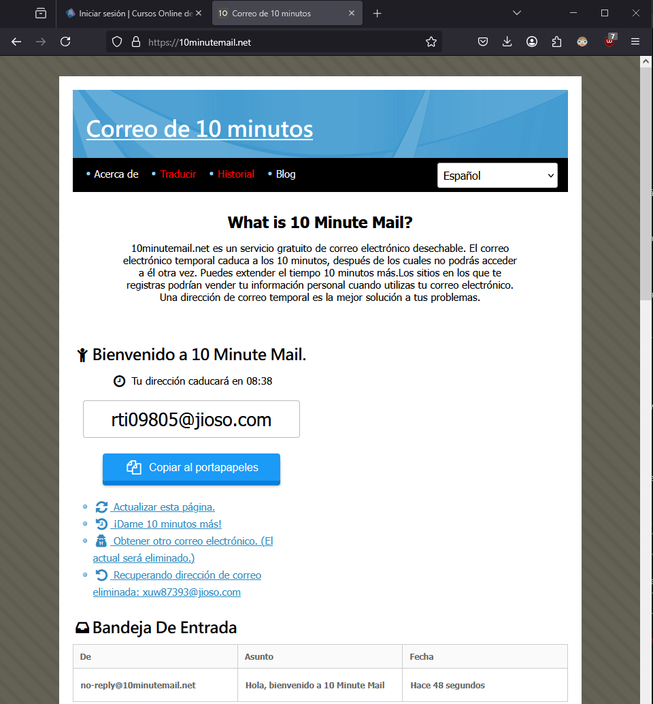
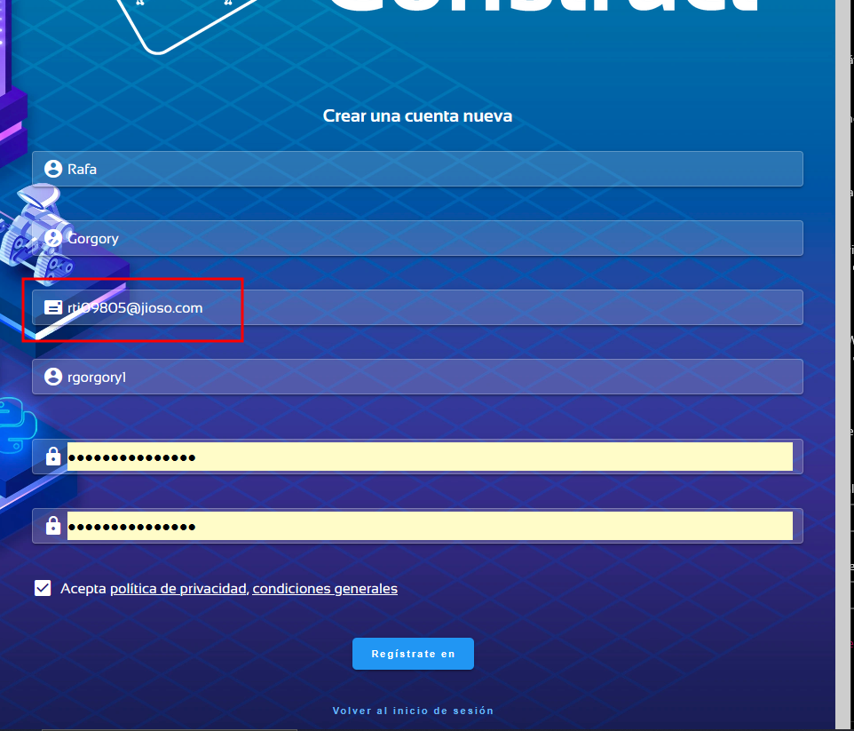
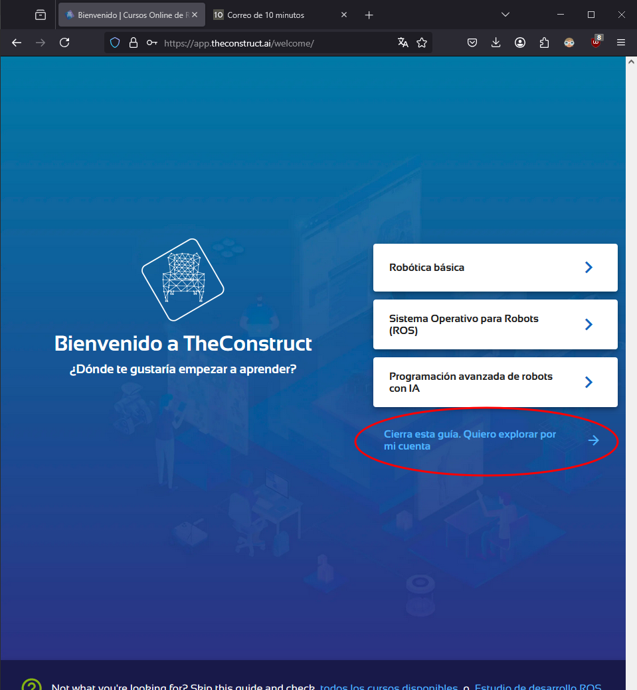
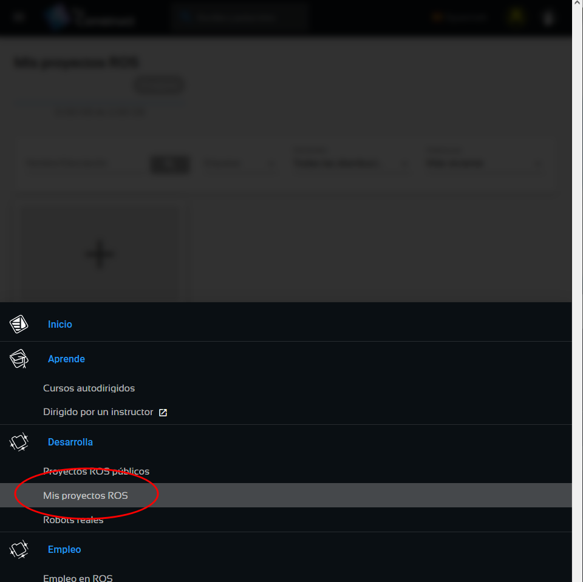
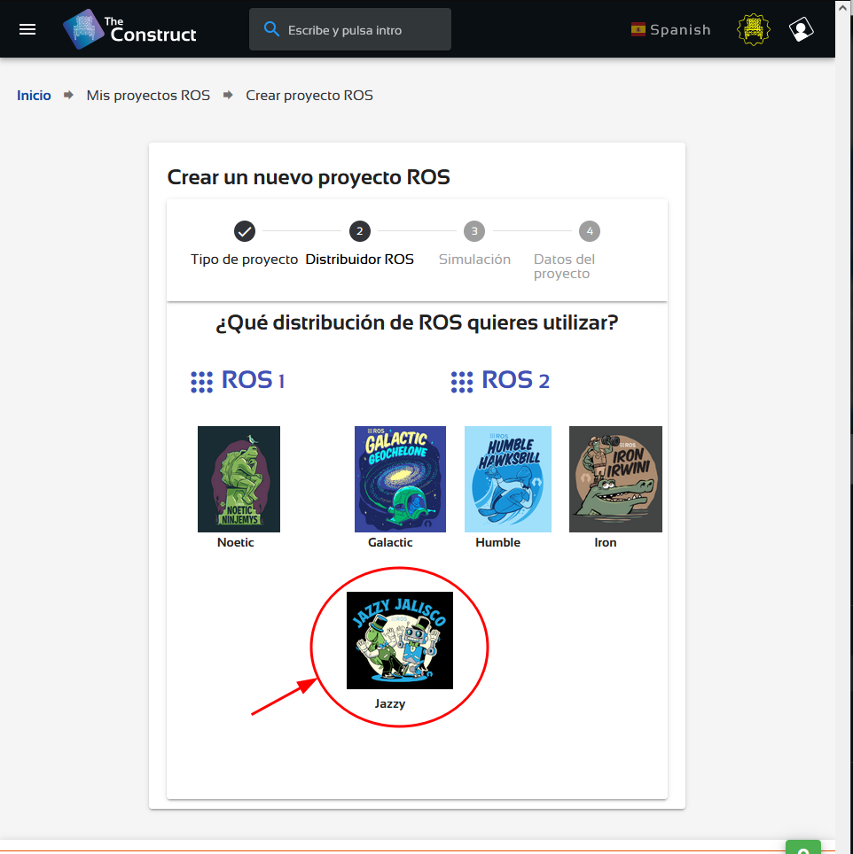
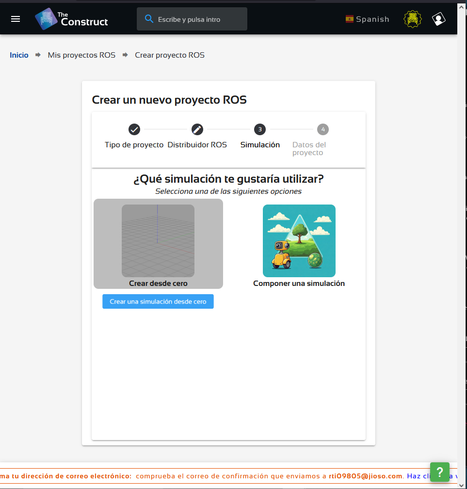

Una de las principales barreras para comenzar a trabajar con ROS2 es la complejidad de su instalación y configuración. Esto puede desanimar a quienes solo desean explorar si ROS2 puede ser útil en sus proyectos personales o profesionales.
Por esta razón, en este curso te propongo una alternativa
práctica: utilizar el entorno virtual en línea que ofrece The
Construct. Esta plataforma proporciona un entorno de desarrollo completamente configurado para
trabajar con ROS2, accesible directamente desde el navegador web.
⚠️ Importante: No es necesario pagar por cursos o suscripciones en The Construct para seguir nuestro curso. Solo utilizaremos su entorno gratuito. Si más adelante deseas explorar sus cursos premium, eres libre de hacerlo, pero no es un requerimiento para este curso.
Paso 1: Crear una cuenta en The Construct
Puedes registrarte usando un correo electrónico temporal a través
del siguiente servicio:
🔗 https://10minutemail.net
✅ Se recomienda no utilizar correos personales ni datos reales, ya que solo usaremos la cuenta para acceder al entorno gratuito.

Paso 2: Rellenar el formulario de registro
Completa el formulario de registro en The Construct con datos
ficticios.
Luego, verifica tu cuenta a través del correo que recibirás
en la bandeja de entrada de 10MinuteMail.
🔗 https://www.theconstruct.ai/
⏳ Recuerda que el correo temporal solo estará activo por 10 minutos.

Paso 3: Omitir la guía de introducción
Al ingresar por primera vez, aparecerá una guía. Haz clic en "Cerrar esta guía / Quiero explorar por mi cuenta".

Paso 4: Acceder a "Mis Proyectos"
En el panel principal, selecciona la opción "My Projects" o "Mis Proyectos".

Paso 5: Seleccionar la versión de ROS2
Elige la versión de ROS2 que deseas utilizar. Para este curso, trabajaremos con la versión ROS2 Jazzy.

Paso 6: Crear un nuevo proyecto
Haz clic en "Create a ROS project" (Crear un proyecto de ROS) y luego selecciona la opción "Create a Simulation from Scratch" (Crear una simulación desde cero).

Paso 7: Comenzar a trabajar con el entorno virtual
Una vez creado el proyecto, se abrirá una interfaz web que incluye:
-
Un sistema con ROS2 preinstalado
-
Varias terminales listas para usar
-
Un entorno de desarrollo integrado (IDE) basado en VSCode
🌐 Ten en cuenta que la experiencia dependerá en gran parte de la velocidad de tu conexión a internet.